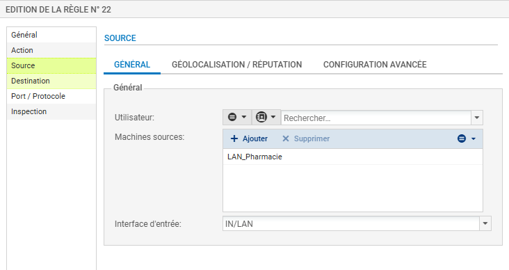
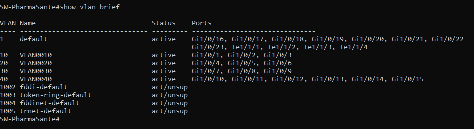
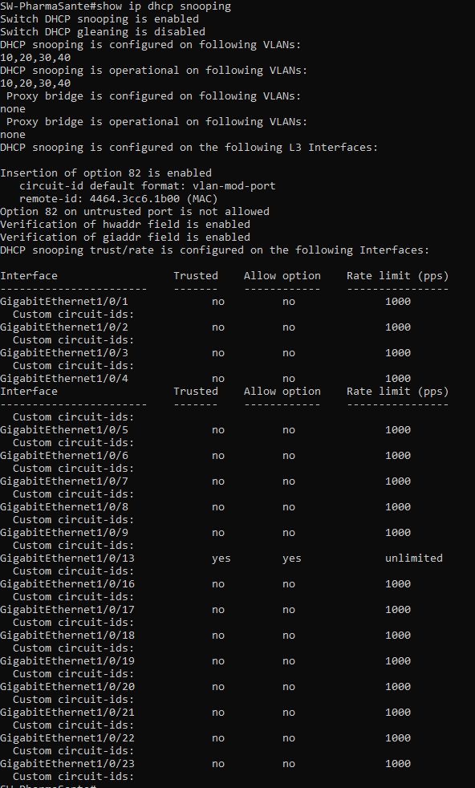
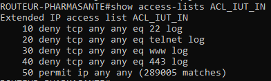
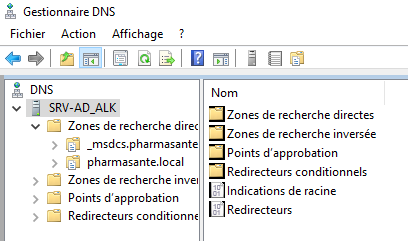
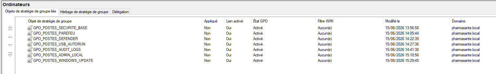

Windows Server
Déploiement d'AD DS, organisation du domaine, création des objets, zones et enregistrements DNS, étendues et options DHCP, puis GPO de sécurisation et de configuration pour les serveurs, utilisateurs et postes.
Réalisé en équipe en juin 2026, PharmaSanté est le projet de synthèse de ma première année de BUT Réseaux & Télécommunications. L'objectif était de concevoir, déployer et sécuriser le système d'information complet d'une pharmacie fictive, depuis le câblage physique jusqu'aux services d'entreprise.
L'infrastructure devait séparer les services Finance, RH, Technique et Serveurs, permettre les communications utiles entre les zones, fournir un accès extérieur sécurisé et centraliser l'administration des utilisateurs et des postes. Le projet associait équipements Cisco, pare-feu Stormshield, Windows Server, serveurs Debian, téléphonie IP et postes clients.
Mon périmètre personnel couvrait les briques centrales de l'infrastructure. J'ai assuré leur configuration, leur raccordement et leurs tests de fonctionnement, puis documenté les preuves de validation.
Réalisé personnellement : tout le périmètre Windows Server avec AD DS, DNS, DHCP et les GPO, la configuration du pare-feu Stormshield, le service FTP, le switch de niveau 3, le routeur Cisco, ainsi que les liaisons physiques et le branchement des équipements.
Déploiement d'AD DS, organisation du domaine, création des objets, zones et enregistrements DNS, étendues et options DHCP, puis GPO de sécurisation et de configuration pour les serveurs, utilisateurs et postes.
Création des VLAN, affectation des ports, SVI, routage inter-VLAN, relais DHCP, accès SSH et protections de niveau 2 avec DHCP Snooping, Port-Security, BPDU Guard et Storm-Control.
Configuration des interfaces et des routes, raccordement vers le réseau extérieur, NAT/PAT, ACL de filtrage et contrôle des accès d'administration.
Création des objets réseau, configuration des interfaces, route de retour, groupe des réseaux internes et règles de filtrage/NAT entre le LAN et la sortie.
Mise en place du service de transfert de fichiers, organisation des espaces d'échange et validation des transferts utilisés notamment pour centraliser des sauvegardes techniques.
Branchement du switch, du routeur, du pare-feu, des serveurs et des postes, contrôle des interfaces et du câblage, puis tests de connectivité et diagnostic des flux avec Wireshark.
Ces captures proviennent du compte rendu technique du projet. Cliquez sur une image pour l'ouvrir en taille réelle.






Les difficultés les plus formatrices ont demandé de croiser les configurations, les tables de routage, les résultats de commande et les captures Wireshark plutôt que de modifier les équipements au hasard.
Une route agrégée en /16 faisait considérer une partie du réseau extérieur comme locale et perturbait notamment l'accès au DNS de l'IUT.
Correction : analyse du cheminement, puis remplacement par des routes /24 précises pour chaque VLAN.
Les paramètres destinés à l'utilisateur avaient initialement été placés dans la configuration ordinateur, empêchant leur application correcte.
Correction : déplacement des clés HKCU dans la configuration utilisateur, actualisation des stratégies et validation côté client.
Après un rechargement, la clé RSA du switch était absente ou différente, entraînant un refus ou une alerte d'empreinte sur Windows.
Correction : régénération de la clé RSA, sauvegarde de la configuration et actualisation de l'empreinte connue sur le poste d'administration.
À l'issue du projet, l'infrastructure était fonctionnelle de bout en bout : les postes recevaient leur configuration réseau, les noms internes étaient résolus, les GPO s'appliquaient, les VLAN communiquaient selon les règles prévues et la sortie extérieure était protégée par le pare-feu et le NAT/PAT.
Segmentation réseau, routage, services Windows, pare-feu, FTP et liaisons physiques validés par des tests reproductibles.
ACL, filtrage Stormshield, politiques GPO, protections du switch et limitation des accès d'administration.
Progression dans l'analyse méthodique d'une panne : observation, hypothèse, correction ciblée et nouvelle validation.
Conception LAN, administration Windows Server, configuration Cisco, sécurité réseau, câblage, documentation et travail en équipe.
Ce projet m'a surtout appris à faire fonctionner ensemble des briques habituellement étudiées séparément. Il constitue ma première expérience complète de déploiement d'une infrastructure d'entreprise, avec une responsabilité personnelle forte sur le réseau, Windows Server et la sécurité périmétrique.